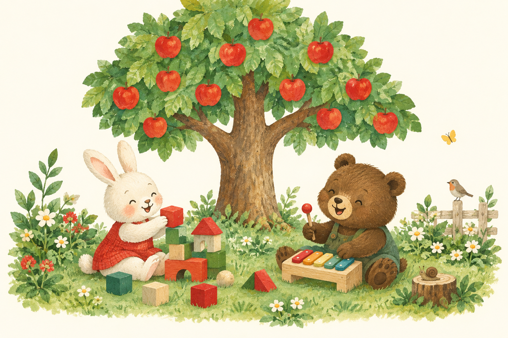

01
モンテッソーリ療育
やってみたい、を大切に。
教具に触れ、自分で選び、取り組む時間。日常生活の基礎を、一人ひとりのペースで育みます。

ひとりひとり、ちがう実り。
OUR WISH
お子さまが、自分の人生を選んでいけるように。
りんご園は、一人ひとりに寄り添いながら、
その子の「やってみたい」を大切にします。
個別療育と小グループの療育を組み合わせ、
お子さまに合わせた個別支援計画をつくります。
OUR CARE
やってみたい、を大切に。
教具に触れ、自分で選び、取り組む時間。日常生活の基礎を、一人ひとりのペースで育みます。
ことばを、リズムにのせて。
音楽のリズムを身体で感じながら、楽しくことばに親しむ療育です。
音を楽しむ。自分を表す。
音楽に親しむ時間を通して、それぞれの「好き」や表現する楽しさを大切にします。
OUR ROOMS
SAKAI / 百舌鳥陵南町
〒591-8034 堺市北区百舌鳥陵南町3丁193-1A
072-242-7208園のご案内 ↗SAKAI / 新金岡
〒591-8021 大阪府堺市北区新金岡2丁5-1-18 シャムス新金岡1A
072-225-4822園のご案内 ↗SAKAI / 北丸保園
〒590-0037 堺市堺区北丸保園1-3
072-280-4007園のご案内 ↗OUR DIARY
LET’S TALK
お子さまのことも、りんご園で働くことも。
それぞれの窓口から、ご相談いただけます。